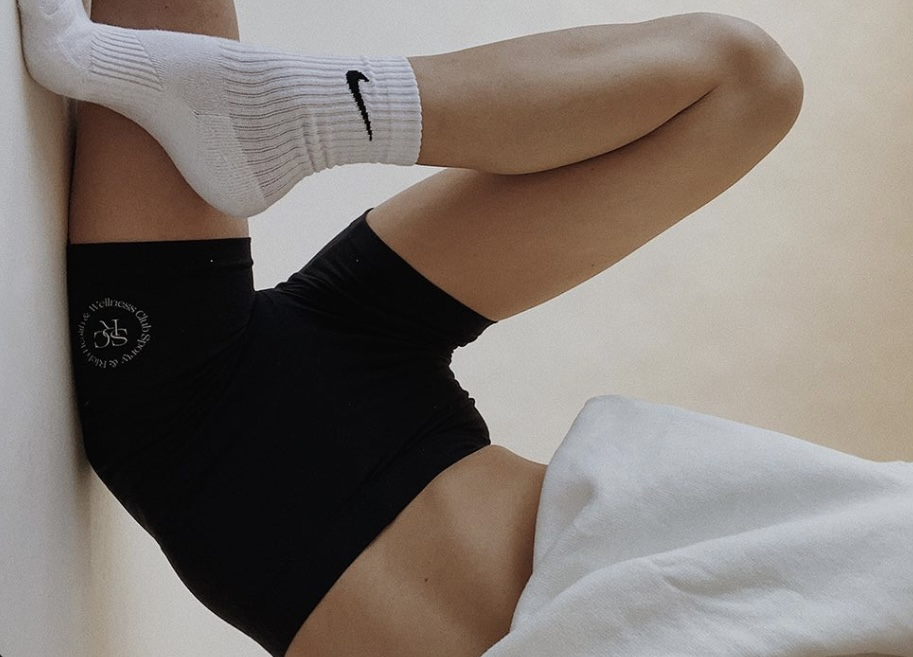

Я не делаю типичные фото и визуалы!
Моё самое главное умение - чувствовать людей, чувствовать идею брендов и умение это передать в визуальном ряде. Умение раскрыть вашу самобытность, ваши ценности, чтобы это зацепило зрителя и выделило вас в бесконенчном потоке информации.
Я работаю по обе стороны камер и поэтому со мной не нужно переживать о поизировании. Каждая съёмка проходит в формате мини-мастер класса, так что вы уйдёте с новыми навыками и станете чувствовать себя с камерой увереннее.
Поздравляю, вы нашли профессионала своего дела, который выведет ваш бренд/блог на новый уровень!
